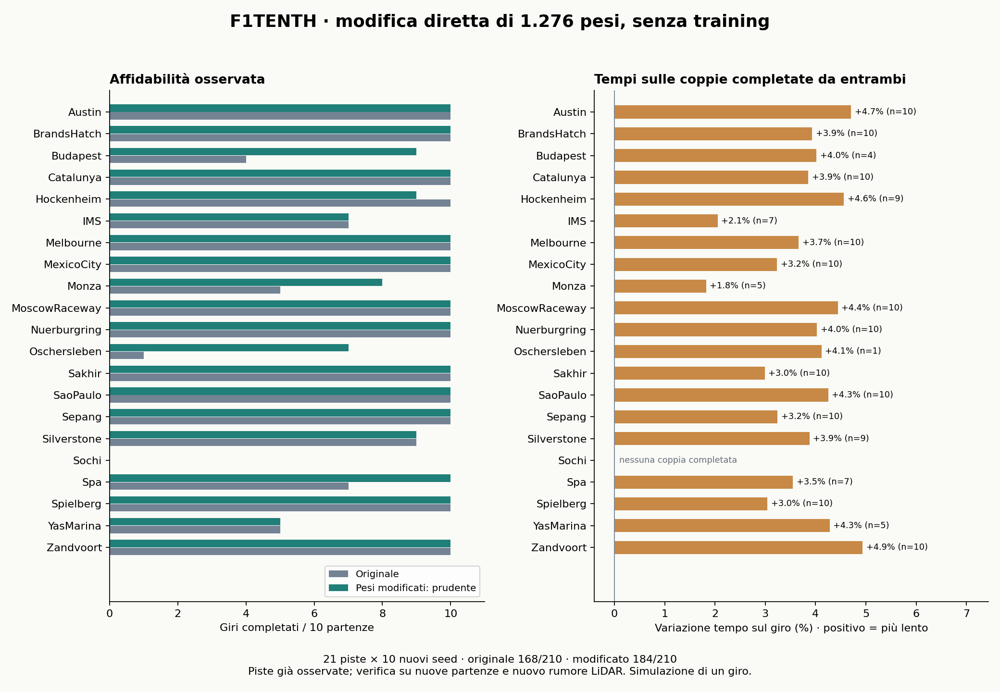

| Confronto | Originale | Modificato | Tempo sulle coppie completate |
|---|---|---|---|
| Primo candidato, sviluppo | 17/20 | 17/20 | -1.68% |
| Primo candidato, 17 altre piste | 67/85 | 66/85 | -1.91% |
| Candidato prudente, sviluppo | 17/20 | 17/20 | +3.87% |
| Candidato prudente, verifica finale | 168/210 | 184/210 | +3.77% |

Due neuroni per leggere lo spazio libero
L’attore appreso riceve 1.080 raggi LiDAR e calcola sterzo e velocità attraverso due strati di 64 neuroni tanh. Su 8.190 osservazioni di sviluppo, il neurone 15 del primo strato e il neurone 1 del secondo sono quasi costanti. I bias successivi assorbono il loro contributo precedente. I due neuroni possono così trasformare la media dei raggi frontali 520–559 in una correzione della velocità.
Il primo circuito aggiunge fino a 0,60 m/s. Il secondo sottrae fino a 0,60 m/s quando la strada è chiusa e aggiunge fino a 0,30 m/s quando è libera. Ogni candidato modifica 1.276 scalari su 73.474 nell’attore e 146.885 nel checkpoint complessivo. La deviazione massima dello sterzo sulla serie di sviluppo è 0,0000597 in coordinate normalizzate.
Partenze e controlli
Lo sviluppo usa cinque partenze su quattro piste, la prima verifica cinque su ciascuna delle altre 17. Dopo la revisione prudente, il test finale usa dieci nuovi seed per ciascuna delle 21 piste, da 7001 a 16010. L’ambiente storico usava 19 piste e versioni software diverse. Il banco locale misura l’effetto dell’intervento sulle mappe disponibili.
Ogni episodio dura al massimo 200 secondi simulati. Per completare il giro occorre visitare almeno il 99% dei waypoint in ordine e attraversare la linea di partenza senza una collisione segnalata. Partenze e rumore LiDAR sono appaiati. I tempi si confrontano sulle stesse partenze completate dai modelli indicati. Un valore negativo indica un giro più rapido.
Il caricamento PPO riproduce esattamente le azioni del valutatore su 128 osservazioni per checkpoint. La ripetizione di due episodi originali restituisce gli stessi esiti. Le dieci partenze su ciascuna pista condividono la geometria del circuito.
Completamenti e tempi per pista
| Pista | Originale | Prudente | Variazione tempo appaiata |
|---|---|---|---|
| Austin | 10/10 | 10/10 | +4.71% |
| BrandsHatch | 10/10 | 10/10 | +3.93% |
| Budapest | 4/10 | 9/10 | +4.02% |
| Catalunya | 10/10 | 10/10 | +3.86% |
| Hockenheim | 10/10 | 9/10 | +4.56% |
| IMS | 7/10 | 7/10 | +2.06% |
| Melbourne | 10/10 | 10/10 | +3.66% |
| MexicoCity | 10/10 | 10/10 | +3.23% |
| Monza | 5/10 | 8/10 | +1.83% |
| MoscowRaceway | 10/10 | 10/10 | +4.44% |
| Nuerburgring | 10/10 | 10/10 | +4.03% |
| Oschersleben | 1/10 | 7/10 | +4.12% |
| Sakhir | 10/10 | 10/10 | +2.99% |
| SaoPaulo | 10/10 | 10/10 | +4.26% |
| Sepang | 10/10 | 10/10 | +3.24% |
| Silverstone | 9/10 | 9/10 | +3.88% |
| Sochi | 0/10 | 0/10 | — |
| Spa | 7/10 | 10/10 | +3.55% |
| Spielberg | 10/10 | 10/10 | +3.04% |
| YasMarina | 5/10 | 5/10 | +4.28% |
| Zandvoort | 10/10 | 10/10 | +4.94% |